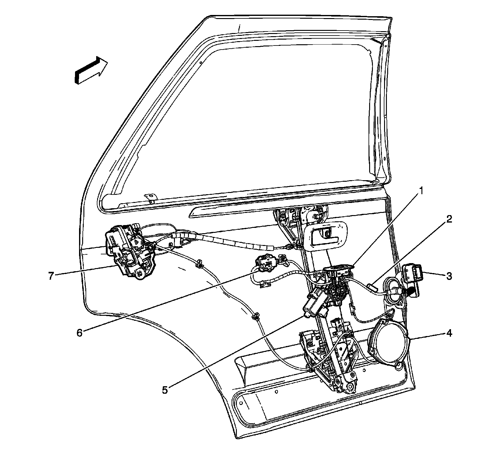
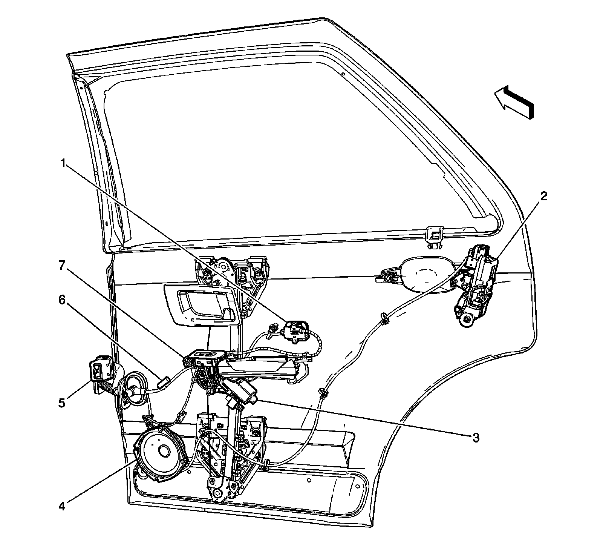

Door Component Views
Door Component Views
Left Rear Door Components

1 - Window Switch - Left Rear
2 - J701
3 - X700
4 - Speaker - Left Rear Door
5 - Window Motor - Left Rear
6 - X701
7 - Door Latch Assembly - Left Rear
Right Rear Door Components

1 - X801
2 - Door Latch Assembly - Right Rear
3 - Window Motor - Right Rear
4 - Speaker - Right Rear Door
5 - X800
6 - J800
7 - Window Switch - Right Rear